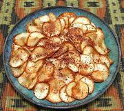

|
Cassava ChipsEast Africa, Tanzania - Krisp za Muhogo | ||||
| Makes: Effort: Sched: DoAhead: |
8-1/2 oz ** 45 min Yes |
Similar to Potato Chips, these chips are much easier to make because they don't splatter when deep fried. They are probably also lower in calories because they are more dense and don't absorb so much oil. | |||
| An Indian carbon steel Kadhai is the best frying container, but a Wok will do. | |||||
|
1-3/4 ar ------- ar |
# --- |
Cassava Root (1) Oil, Deep Fry (2) -- Sprinkle with Pilipili Masala (3) -or- Salt |
Make - (45 min)
|